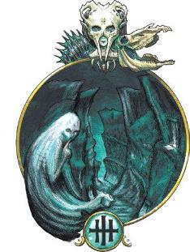
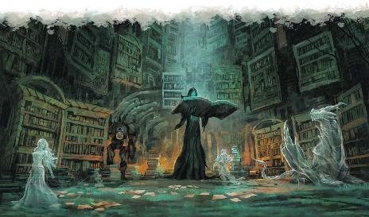

Exploring Eberron p156~160
DOLURRH: THE REALM OF THE DEAD
原文基于July 2020. PDF
Version: 1.04
翻译by Pany_Q
校对 by 4个月后的Pany_Q
最后修改于： 20210329
DOLURRH: THE REALM OF THE
DEAD

杜鲁尔是无尽的阴森洞穴，蜿蜒、贯穿于灰暗的岩石之中。无论你走到哪里，都会有晦暗不明的身影向你伸出恳求的手来，但当它们虚幻的手指穿过你时，你能感觉到的只有最微弱的寒意。雾气在你的脚边积聚，当你越过它们前行时，你才意识到这团盘绕的雾气在呻吟呜咽。这不是什么自然现象所形成的雾气，而是忘记了自我的灵魂的残骸。这里是杜鲁尔。它并不是死亡或衰败的概念的化身——这两者由玛伯尔体现。相反，杜鲁尔是凡俗生物在肉体消亡后的灵魂的归处，这里是记忆消逝之地，是生命被遗忘之地。
当凡俗死亡后，其精魂很快就会被引向杜鲁尔，其记忆也立即开始衰退。大多数精魂在几天之内就会失去任何想要离开杜鲁尔的意愿，而在几周之内，它们对生前的记忆也几乎消磨殆尽。有些信仰，如艾伦诺和沃尔之血，认为杜鲁尔是存在的绝对终点，是生命完全消失前的最后回响。但是，当多里乌斯·阿莱尔·ir·柯兰(Dorius Alyre ir'Korran)创作出他那经典的诸位面图（见本书开头）时，则用了天命诸神的八尖圣徽*(Octogram)符号来代表杜鲁尔，因其宣称杜鲁尔为所有凡人前往天命诸神之所在的必经之门。这已经成为一种常见的观点：看似记忆消逝，其实是灵魂逐渐升华到更高的存在形式。天命诸神的封臣们(Vassals,对天命诸神的信徒的称谓)会说，虔诚的信徒们终于到达了天命诸神所在的地方；银焰的追随者们会说，高尚的灵魂令火焰变得更加强大。剩下的只是一具空壳——被丢弃的残余物，就像一张蜕下的蛇皮，或者是可供死者交谈法术来读取的残留记忆。因此，虽然杜鲁尔一直以来都被称为死者国度，但很多人却称它为“门”(Gateway)。归根结底，这是一个信仰的问题——无论杜鲁尔的另一头是失忆的的无意识状态还是与神同在的极乐之境，都没有人从那边回来告诉人们答案过。
*Octogram，八尖圣徽。ERftLW中译为八棱圣纹，个人不同意这个译名，它不是八个棱，而是八根棍。
阿卡尼克斯(Arcanix)的智者安诺利塞(Annolysse)声称，杜鲁尔一定是第十三个位面，因为它没有对立位面。它并不体现一种理念，而是服务于一个目的——那就是收集、汇聚，和（也许）超度灵魂。达安维(Daanvi)审判凡俗的行为；相比之下，杜鲁尔并不审判，也不惩罚。它只是旅程的结束——或者取决于你如何看待它，也可能是新旅程的开始。
所有活物，或早或晚，都会来到杜鲁尔。如果有谁在死前就来到这里，那几乎可以肯定他们是为了寻找某些东西——失去的灵魂，或被遗忘的记忆。但不论是活的还是死的，任何来到杜鲁尔的，都有可能会被它的力量所捕获。
杜鲁尔的一切都灰暗而阴沉。即使是最鲜艳的颜色也显得黯淡无光，最欢乐的声音也显得沉闷乏味。旅行者一到这里就会被沉重的倦意所笼罩，即使是最简单的任务也成了困难的挑战。这里总是弥漫着一种吸引力，它牵动你的记忆和情感，令你想要静静地坐下，放空精神让一切都过去。
永恒倦怠(Eternal Ennui)：当一个生物进入杜鲁尔时，会立刻获得1级倦怠状态（详见“倦怠 ENNUI”边栏）。在杜鲁尔期间，这一倦怠等级不能通过休息或任何其他方式解除。当生物离开杜鲁尔时，倦怠等级会立即被解除。杜鲁尔本地生物免疫该特性的效应。
魔法抑制(Impeded Magic)：生物若要施放一个1环或更高环级的法术，必须先通过一个DC为10+法术环级的施法关键属性检定。若检定失败，法术不会被施放，法术位也不会被消耗，但该动作被使用。
无止捕获(Inevitable Entrapment)：每当一个生物完成一次短休或长休时，必须进行DC 12的感知豁免检定。若检定失败，则获得1级倦怠(ennui)。每做一次检定DC增加1。若一个生物在没有完成一次长休的情况下经过了24小时，则必须立即如同刚刚完成一次休息一样做豁免检定，且该次检定带有劣势。杜鲁尔本地生物免疫该特性的效应。
时间静止(Timeless)：时间流逝的速度与物质位面相同，并且各位层保持同步。生物可以获得休息的收益，会受到伤害，也会死亡。不过，当生物在杜鲁尔时，其不会衰老，也不需要吃、喝或睡眠。
|
倦怠ENNUI 倦怠会吸取活力和记忆，是杜鲁尔消磨灵魂的力量的体现。这种特殊状态以等级衡量，它会影响所有非杜鲁尔本地的生物——包括不死生物以及其他免疫力竭的生物在内，除此之外它的效果和规则与力竭(exhaustion)相同（详见《玩家手册》附录A）。倦怠与力竭分开计算，且力竭等级不与倦怠等级相叠加。如果一个生物同时具有倦怠和力竭状态，就用等级较高的那个状态来决定效果。 不死生物在杜鲁尔时无法从倦怠中恢复。当一个倦怠等级为2或以上的活物每完成一次长休时，若在对抗杜鲁尔的无止捕获的豁免检定中成功并与DC的差值达到5或以上，其倦怠等级就会降低1级。 当一个生物离开杜鲁尔时，所有倦怠等级都会被解除。 当一个生物的倦怠等级达到6级时，其意志彻底崩溃，失去了自发采取任何行动的能力。一个活物若遇到这种情况，其肉体立刻死亡，其本身则成为一具被束缚在在杜鲁尔的魂壳(husk)。 |
在各种意义上来说，杜鲁尔是一台机器。杜鲁尔对精魂的吸引力是一种机械式的效应，也是灵魂本质的一部分。而杜鲁尔的居民们就是维持机器系统运转的齿轮。
杜鲁尔的本土生物们都从属于转化的循环，并且在这个过程中担任特定的职能。所有的瞬者(Quick)人都免疫倦怠(ennui)状态。
判魂魔(恶魔)(Nalfeshnee, Demon)在杜鲁尔的地下墓穴(the Catacombs)中巡逻，它们驱散融魂(melds)和劣魔(lemures)，并处理凡人闯入者。判魂魔以大型类人生物的样貌出现，其细节特征被笼罩在灰色的雾气中。它们的爱好是杀死凡人并将后者的灰影(shade)从碾碎的尸体中扯出来，以及享用劣魔。
猎杀者(制裁者)(Marut, Inevitable*)是从杜鲁尔的灵魂熔炉(the Crucible of Dolurrh)中用魂钢(husksteel)锻造出的强大守卫，其使命是守护生与死的循环。猎杀者有时会受命前往艾伯伦，或为了干预复活行为，或由于巫妖或木乃伊的诞生。没有人清楚触发这种致命干预的条件到底是什么——也许是某人的复活会违背巨龙预言。但总之，乔拉斯克家族的治疗师们总会在复活死者之前施放卜筮术(Augury)。如果结果是"凶"，他们就会拒绝这项工作，以免猎杀者从杜鲁尔降临，杀死被复活者以及治疗师，还很可能顺带摧毁整个医疗所。
*译注：猎杀者Marut是制裁者Inevitable的一种，制裁者Inevitable是构装体的一种。其中Inevitable在5e怪物手册中未翻译，沿用3R核心译名制裁者。
影灵(Shadar-kai)是被死者女王赋予了新生命的灰影(shades)，他们是死者女王的仆从。虽然他们的新形态看起来像精灵，但他们的前世可能是任何一种类人生物；女王将这些引起其注意的灵魂保存了起来，免于捕获效应的影响。影灵在记忆之塔(the Vault of Memories)工作，偶尔也会作为女王的代行者前往艾伯伦。他们可能会与死灵法师发生冲突（尤其是罪髓女士的特工），或收集小饰品(trinkets)，还可能会没有任何规律或理由地袭击凡人。许多贤者试图解释这些神秘的行为，通常的猜测是：他们是在为记忆之塔收集一些特别悲惨的记忆。
除上述之外，其余的杜鲁尔居民是独一无二的个体，例如呆在记忆之塔(Vault of Memories)的图书管理者(Librarian)，以及居住在灵魂熔炉(the Crucible)的灵魂铁匠(the Smith of Souls)。
从蜷缩在阴影中的灰影到呻吟的层层雾气，亡者的精魂在杜鲁尔随处可见。死者(the Dead)可能被认为是杜鲁尔的显能现象，但实际上它们并不是被位面创造出来的，它们都曾经是活生生的凡俗生物。
灰影(Shades)是刚到达杜鲁尔的凡俗灵魂。灰影保留了一部分生前记忆和模样，但是没有实体，不能与物质事物互动。灰影会受倦怠影响，随着倦怠等级提升，它们的外形变得越发模糊，记忆也逐渐消失。灰影可以说话，它们可能会哭泣或乞求冒险者的帮助。然而，大多数灰影都无法自主采取任何行动。经常可以看到它们迷失在沉思中，或是试图记起一些已经忘记的东西，或是执迷于过去的错误。
魂壳(Husk)是已经完全被倦怠征服的灰影，这些无害的生物只拥有其生前最模糊的记忆。大多数魂壳还一定程度上保留着他们作为凡俗生物时的外形，但他们会在接下来的几十年中持续地消逝，最终与其他魂壳融合，变成一片片只会呻吟的雾气。魂壳没有真正的自我意识，因此免疫倦怠效应。有时，一群魂壳会簇拥着某个强烈的记忆，形成一个灵质团块，徘徊逡巡着，试图寻找更多的记忆碎片，继续吸收更多其他的魂壳。这样形成的生物被称为融魂(meld)，其数据详见第八章。
幽魂(Ghost)形成自抱有强烈执念的灰影，可能是犯下的过错，或深刻的仇恨，其执念之深，甚至连杜鲁尔都无法消除。幽魂的其他记忆会逐渐消失，变得免疫倦怠，但余烬仍在，并决定了其本质。驱使幽魂的是一种原初的欲望：它们渴望回到艾伯伦，或回到自己殒命的地方，或徘徊在拥有其重要记忆的场所。当杜鲁尔相接或某个复活出错时，它们就可能趁机溜到物质位面。幽魂即使被摧毁也会再次显形；只有当未尽之事得到解决，它们才能获得安息。
其他形式的不死生物在杜鲁尔很少见。在这个位面的都是亡者的精魂，或正在慢慢消逝、转变，或被困在这个过程中的某一阶段。这里不是诸如食尸鬼、骷髅或僵尸等有实体的不死生物该呆的地方——那些对生命充满饥渴的不死生物属于玛伯尔
杜鲁尔并不会因欢乐和幸福的记忆而受到损害，但关于痛苦、残忍、愤怒的记忆会留存更久...，它们还会伤害他人。即使不会像幽魂一样困住灰影，这种心灵残留也会在杜鲁尔这台精神机器的零件间积累起来。徘徊不散的痛苦和仇恨往往会因某个凡人的出现而被触发，从而凝聚成实体。劣魔(lemures)是其中最低等的，由仇恨的记忆或行为形成。致命的哀恸魔(sorrowsworn)则由成百上千人的情绪残留形成，它们有愤怒(the Angry)、饥饿(the Hungry)、孤独(the Lonely)、失落(the Lost)和悲惨(the Wretched)，如《莫邓肯的众敌卷册》(Mordenkainen's Tome of Foes)所述。徘徊者是在杜鲁尔形成的，并且免疫倦怠；但他们并不是位面所期望的结果，而只是一种附带产物。因此，判魂魔、猎杀者以及其他守卫一旦发现徘徊者都会将其摧毁。
死者女王是杜鲁尔最强大的存在，她高坐于记忆之塔(Vault of Memories)顶端的巨大尖顶中。其动机和起源不为人所知；不过奇怪的是，她比大多数其他位面大能们更关注物质位面。死者女王外表看起来是一位精灵女性——虽然早在精灵出现以前她就已经存在很久了，她的脸庞隐藏于破裂的雪花石膏面具之下，身穿镶银边的黑色羽毛长袍。她能够将灰影从捕获的循环中剥离，甚至赋予它们新的生命，将它们安置在新的身体中，从而创造出影灵(shadar-kai)。还有一些灵魂，她会予以保留但不会复活，而是将它们保存在记忆之塔中。死者女王收集秘密和记忆，她会从图书管理者(Librarian)收集的记忆中选取她最喜欢的，然后保存在个人的收藏中。有时，她会与凡间的亡灵法师产生直接冲突，尤其是罪髓女士(Lady Illmarrow)。而其他时候，她似乎对杀死特定的人感兴趣，也许是为了能够保存他们的灵魂或记忆。不过这样直接的行为极为罕见，如果一个世纪内出现一次以上就很了不得了。大多数时候，死者女王只是在杜鲁尔保持着她神秘的沉默，无人知晓，也无从知晓。
很少的情况下，最勇敢的（也是最愚蠢的）冒险者会为了从杜鲁尔夺回某个逝去的精魂而闯入死者女王的国度。同样很少的情况下，他们真的会成功，因为死者女王并不在乎每一个世纪甚至每十年有一两个灰影被偷走。不过，在巨人时代，库尔·希尔霸权(Cul'sir Dominion)曾派一支军队进入了杜鲁尔，试图找回在梦族战争中死去的某个家族成员的精魂——无人生还。在杜鲁尔，女王的力量不容挑战，任何引起她注意的小偷都会在眨眼间灰影被扯离肉体。
杜鲁尔总是灰暗而阴郁。据勇敢的探险家描述，在那里时有种身处地下的感觉，没有凡人见过杜鲁尔的月亮或天空。与其他多数位面不同，杜鲁尔的各位层并非不同概念的体现，而是这个专门处理灵魂的大机器中承担着不同功能的区域。
去过杜鲁尔并活着回来的凡人冒险家们的记录中描述了四个位层，如下所述。杜鲁尔仍可能有更多别的尚未被发现的位层，各个都可能承担着重要的作用。已经确认，图书管理者在记忆之塔中记录了龙们的生命历程；因此，贤者们推测，可能有一个专属于龙类精魂的位层，龙类的精魂可能比单纯的类人生物的精魂停留更长的时间。
在灰色岩石中蜿蜒的无尽隧道构成了“地下墓穴”，这里是所有类人生物的精魂的终点。有些通道非常狭窄，有些则宽敞如宏伟的大厅，高高的天花板消失在黑暗之中。这里到处都是死者，灰影们恳求着解脱，魂壳在阴影中哀嚎。在地下墓穴的厅室中，有充满了呻吟雾气的巨大地坑，判魂魔正驱赶灰影进围栏，或是正从墙上刮下劣魔。
地下墓穴可能比科瓦雷甚至比艾伯伦还要大。一个凡人可能会永远在这些蜿蜒的隧道中徘徊——至少在他们被倦怠吞噬之前。然而，有些交界点是超越距离的逻辑的。如果能正确地识别出方向标记，就可以迅速地穿越浩瀚的地下墓穴，或是能到达其他位层——也许是为了寻找某个需要拯救的灰影，如下文《关于复活》节所述。
怪兽巢穴在外观上与地下墓穴相似，只是这里的灰影和魂壳来自野兽(beasts)和怪兽(monstrosities)，同样在这里的还有负责照料它们的判魂魔和猎杀者。在这里，你会听到正在消逝的狼精魂发出嚎叫，看到成群的幽灵鸟在宏伟的大厅中飞翔，以及其他更大更凶猛的生物。野兽的精魂很少会在杜鲁尔停留很久，因为需要抹除的记忆更少。但，所有的狗都会去杜鲁尔！（译注：也就是说你和你的狗狗死后不能去同一个地方）
这里的大厅中可能还游荡着如影灵那般由死者女王所创造的特殊的仆从。比如说，冒险者们可能会被一只拥有诗人灵魂的聪明乌鸦诘问。
在这个由影灵维护、由新铸的猎杀者保卫的宏伟的铸造厂中，被称为灵魂铁匠(the Smith of Souls)的不朽精魂将消逝精魂的精华提炼成魂钢(husksteel)。她用残留的记忆和情感锻造出影灵的盔甲和武器，用勇敢灵魂的魂壳制造出猎杀者。她也会用魂钢创造出更小更奇特的物品，这些见下述《杜鲁尔神器》节。
灵魂铁匠面带黑钢面具，身着龙皮围裙。当锻造猎杀者时，她会变成巨人的样子；当制作小饰品时，她会变成侏儒的样子。她可能会收集凡人工匠的记忆，并能够在她的锻造场复制他们的作品。
记忆之塔是杜鲁尔的心脏。这座塔从灰色岩石中雕凿而出，且比萨恩的任何一座高塔都要高大。塔的下层是图书馆；这里有一位被称为图书管理者(the Librarian)的精魂，他会采访每一个灰影，并记录它的一生。他的力量可以做到将灰影整整一生的历程都记录在一张很大的纸页上。每一个刻画其中的符号都蕴含着一段至关重要的记忆，如果一个生物拥有奥秘学熟练，就可以通过阅读符号来体验相应记忆。影灵抄录员们精心打理着图书馆所处的这些楼层以及保存其中的无数记录着一生历程的书籍。图书管理者是一个巨大的戴着兜帽的身影——他的书籍同样巨大。据说他可以同时出现在许多地方，能在每一个灰影消逝之前与其对话，以便记录下它的生命故事。
位于图书馆之上的诸多厅堂中，保管着死者女王的许多宝物。那些看似黑曜石雕像的东西，其实是灰影，它们被保存为结晶，以防因被杜鲁尔捕获而消失。绘画和水晶中包含着被女王选中而隔绝的记忆。除此之外，还有无数的奇珍异品，这些都是她的影灵在漫长的时间中收集的。塔的更高处则是女王的私人宫殿，她通常会坐在那里静静地沉思，倾听着她的领地内的无数灰影的低语。

以下是杜鲁尔影响物质位面的一些方式。
与杜鲁尔相连的显能区域很少会展现该位面的所有特性，一般来说旅行者不会仅仅因为路过了一个显能区就被倦怠所困。但这些区域仍然与死者国度相近，且总是阴森可怖——但不会像玛伯尔显能区那样扭曲病态。阴影以令人不安的方式移动着，旅行者可能会听到无法辨认的低语。
徘徊于杜鲁尔的精魂们渴望回到物质位面，而当在显能区时，它们更容易做到这一点。它们可能会显现为幽魂，或者活化埋在显能区里的人们的尸体，以还魂尸或僵尸的形态回归。在某些杜鲁尔显能区，复活死者伴随着风险；如果在这样的区域中使用了复活死者的法术或能力，请骰《杜鲁尔复活事故表》决定结果。
杜鲁尔显能区也有好处。在一些显能区，复活死者会变得更容易，法术的材料成分成本减半。在另一些显能区，任何人都可以通过举行一个耗时一个小时的仪式来施展死者交谈(speak with dead)，只要他们与被询问的死者有个人联系。
最具戏剧性的显能区是那些能充当通往杜鲁尔的地下墓穴的传送门的——理想的情况下它还能让人回来。要打开这样的通道可能需要一个特殊的仪式或重大的献祭，也许需要月亮亚瑞斯(Aryth)处于特定的位置，或者需要处于杜鲁尔相接时期。
|
D12 |
效应Effect |
|
1-4 |
法术正常生效。 |
|
5-6 |
法术生效，但回归肉体的是另一个精魂——它是敌对的还是友好的？如果被复活的身体原本属于玩家角色，有可能玩家会希望扮演新的人格，玩家可以选择继续使用原有的角色卡，或使用一张新的卡来体现不同的技能。 |
|
7-8 |
法术正常生效，但有1d4个幽魂或融魂(melds)（见第8章）从杜鲁尔被拉过来。 |
|
9 |
法术失败，出现1d4个幽魂或融魂（见第8章）。法术位被消耗，但材料成分不会被消耗。 |
|
10 |
法术正常生效，但出现一个敌对的猎杀者(marut)。 |
|
11 |
法术正常生效，但一个判魂魔(Nalfeshnee)附身了被复活的角色。 |
|
12 |
法术失败，材料成分和法术位都被消耗。 |
杜鲁尔的位面周期相当长。传统上，每隔一个世纪，它会与艾伯伦相接一整年。五十年后，它就会远离一整年。有时，取决于月亮亚瑞斯的运动，相接和远离的周期也可能更短。
当杜鲁尔相接时，幽魂更容易从死者国度溜进物质位面，在杜鲁尔显能区附近尤为如此。任何复活死者的法术或能力也可能成为让不想要的精魂穿过的通道；当施放任何这样的法术时，骰《杜鲁尔复活事故表》。
当杜鲁尔远离时，诸如回生术(revivify)或转生术(reincarnate)等传统的复活魔法无法将精魂从杜鲁尔拉回来。在这种时期，唯一能复活死者的方法就是前往杜鲁尔本身，并将灰影拉回来，如本节前面所述。不过意外的是，幽魂在这个时期也特别常见——但这些并不是从杜鲁尔回来的。相反，当杜鲁尔远离时，如果某人在死亡时沉浸于强烈的情绪，或者有重要的事情还未完成，他们的精魂会更容易地抵抗杜鲁尔的吸引，从而留在物质位面。
最常见的杜鲁尔神器是由灵魂铁匠*用魂钢(husksteel)——凋零的灵魂所凝聚而成的精华——制作而成的。尽管名字叫魂钢，但它可以不止是深色金属的形式，它还可以是滑腻的黑色皮革、反射彩虹色调的暗色布料，或其他物质。这样的物品可以由一个精魂铸成——比如一把匕首的刃口是由一瞬间的痛苦所铸成的，也可以由多个魂壳的情感残留所铸成。
*译注：原文写作Smith of Shadows，疑是前文Smith of Souls笔误，这边直接改为灵魂铁匠。
在创作一件魂钢物品时，要考虑作为这件物品核心的记忆或情感是什么。比如说一件魔法物品，这种情感记忆就应与其作用相匹配。一件魂钢制精灵斗篷(cloak of elvenkind)可能是用一个秘密做成的。一把魂钢版淬毒匕首(dagger of venom)可能是由一瞬间的极度惊恐形成的；当它的力量被启用时，它能造成心灵伤害，并且，若感知豁免失败，目标会陷入对匕首使用者的恐慌(frightened)中*。
*译注：看起来魂钢版淬毒匕首把原版的毒素伤害改为心灵伤害，原版的对目标造成中毒状态改为造成对使用者的恐慌状态；但这里的说法像是只要启动就能造成心灵伤害、只有恐慌状态需要过感知豁免，而不是原版那样不管毒素伤害还是中毒状态都需要过感知豁免。到底是怎样我也不清楚了。
其他的杜鲁尔物品主要是些奇珍异品。《杜鲁尔饰品表》(Dolurrhi Trinkets table)中提供了一些例子。
|
D8 |
物品 Item |
|
1 |
一面手持式小镜子，倒映着某位已死之人或其记忆中某一个事件的影像。 |
|
2 |
一枚单片眼镜，显示出它的前主人在死前最后看到的东西。 |
|
3 |
一个毛绒玩具，当放在黑暗中时会轻轻地唱歌。 |
|
4 |
一支钢笔，如果蘸上墨水后放在一边不管的话，就会自己写出一条特定的信息。 |
|
5 |
一小本皮制封面的日记本，里面写有一首诗、一个故事，或一首音乐，由某位知名作者创作——在其去世后。 |
|
6 |
一枚破损的铜币，如果“人头”朝下，就会自动翻转。 |
|
7 |
一个破损的钢制盒式项链坠(locket, flag专业户饰品)，绘有两幅人像——一幅是已死之人，另一幅是将死之人。 |
|
8 |
一袋灰，捏一撮扔在地上，就会形成一个特定的词语或符号。 |
杜鲁尔的显能区和逃离的幽魂们能为许多简单的故事提供灵感。附在某个魂钢饰品上的一段闪回记忆可能引导冒险者们踏上某个特定的旅程。而从冥界解救某个灰影的故事定会成为一段波澜壮阔的史诗。下面提供几个颇有深意的故事，供参考。
过去与未来的死者女王(The Once and Future Queen of the Dead)：死者女王是一位在杜鲁尔拥有极高地位的神秘人物。但使用这个称号的还另有一人：艾兰蒂丝·沃尔(Erandis Vol)，死亡龙纹的最后一位继承者。艾兰蒂丝·沃尔利用自己在翡翠利爪骑士团之中以及其外的爪牙，设法恢复自身的龙纹的力量。没有人知道，释放出死亡龙纹全部潜能的艾兰蒂丝·沃尔究竟能拥有何等神一般的力量。另一方面，杜鲁尔的死者女王看起来与艾兰蒂丝相互对立，并经常派出手下的影灵或被她有偿复活的冒险者去干扰沃尔的计划。真相可能正如表面一样简单：死者女王厌恶死灵法师，而沃尔力图废黜死者女王。但真相也可能隐藏在表面之下——当涉及位面或拥有强大力量的存在时，时间也会以异于常识的方式运行。也许死者女王并不是要阻止艾兰蒂丝，而是要引导她走上一条特定的道路。也许艾兰蒂丝将会成为死亡女王，换句话说，艾兰蒂丝将要成为一直以来就是她自己的死者女王。又或许，这是原本的计划，但还是有可能出错.....而这可能会毁掉死者女王，令杜鲁尔陷入混乱。
死亡使者(Agent of Death)：冒险者们终于干掉了一个追拿了很久的邪恶反派，但没过多久，这位敌人又活蹦乱跳地出现了。这种情况发生了多次。这个家伙是如何从杜鲁尔逃出来的？他是死者女王的特工吗？或是找到了死者国度的后门？不管是哪种情况，冒险者们该怎么做才能让这个敌人彻底死透？
带来毁灭的哀伤(Devastating Sorrow)：当杜鲁尔相接时，某地出现了一个强大的哀恸魔(sorrowsworn)，这里遭到了惨烈的破坏。凭冒险者们的能力也许做不到在战斗中打败哀恸魔，但如果他们能弄清导致哀恸魔产生的原因，了解驱动其行动的情感及引起其出现的事件，他们也许就能够通过化解这种情绪来驱除这个致命的怪物。当冒险者触摸到杜鲁尔的死者(Dead)或徘徊者(Lingering)——或反过来被后者触摸到时，他们可能会感应到后者所拥有的任何残留记忆或情感闪回。这能帮助他们解开谜团吗，抑或是他们会在那之前死去？
战俑灵魂(The Warforged Soul)：很多人相信战俑只是工具，他们认为卡尼斯家族也许能给物件注入生命，但不能创造灵魂。也有人称，这不是科学的问题，战俑显然是活着的，因此就有灵魂。但战俑的灵魂是独一无二的吗？或者说，战俑的灵魂会不会是用杜鲁尔那些丧失了记忆的魂壳作为基础、回收再利用而形成的？这些问题的答案是故意留白的，每个DM可以自行决定战俑灵魂的真相。但有一个事实是简单明了的：战俑可以通过回生术(Revivify)或死者复活(Raise Dead)被复活。这意味着答案一定存在于杜鲁尔，也许某些人——阿卡尼克斯(Arcanix)？梅里克斯·D·卡尼斯(Merrix d'Cannit)？刀锋统主(Lord of Blades)？——可能会赞助一支探险队去探寻答案。